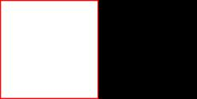
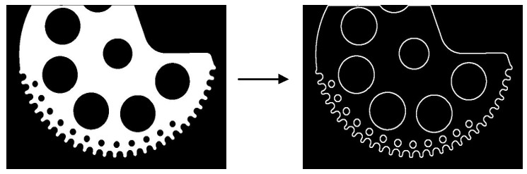

|
类型 |
轮廓 |
|
描述 |
提取二值图像前景目标的轮廓，也就是白色部分的边界。 二值图像的前景即是图像中白色部分，因此提取的轮廓是一个包围白色部分的闭合轮廓；如果图像边界也是前景，那么边界也会当成轮廓被提取出来 注意：若图像轮廓边缘处噪点或毛边较多可结合图像形态学处理算子如开运算或闭运算将噪点或毛边去除后再提取轮廓  提取的轮廓，不裁剪 裁剪1 裁剪2 |
|
语法 |
ZV_ContGen(img,contlist,mode,appro[,border=0])
参数： img：ZVOBJECT类型，单通道8U类型，二值图像 contlist：ZVOBJECT类型，列表类型，输出，列表中存储多个轮廓，轮廓属性根据参数appro不同而不同 mode：轮廓提取方式：0-外轮廓，即外轮廓包围的内部轮廓会被过滤掉，只保留外轮廓，1-所有轮廓 appro：轮廓表示方式：0-点集方式即轮廓用一系列的点集表示,1-精简方式即轮廓用一系列的点集表示但水平、垂直、对角线将被精简成两个端点，建议使用0；appro为0时，contlist轮廓属性为曲线型和非多边形型；appro为1时，contlist轮廓属性为曲线型和多边形型 border：边界点裁剪模式：0-不裁剪；1-裁剪；2-裁剪不与普通点临近的边界点 |
|
适用控制器 |
支持ZV功能或者5系列以上的控制器 |
|
例子 |
 ZVOBJECT img,img_bw,cont_list ZV_ImgRead(img,"count1.jpg",0) '读取图片 ZV_ImpThresh(img,img_bw,200,255) '图像二值化 ZV_ContGen(img_bw,cont_list,1,0) '提取轮廓 |